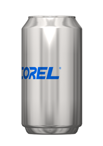

Изогнуть изображение
Инга / 11.04.2014, 01:49
Форум:
Версия программы:
17.0.0.491
Подскажите, пожалуйста, правильную технологию наложения изображения на цилиндрическую поверхность. Т.е. есть два файла PNG. Один, к примеру, цилиндрическая поверхность (столб и т.п.), второй логотип который надо правдоподобно наложить на эту поверхность. Как наиболее правильно это сделать в СРР, чтобы выглядело реалистично?
Спасибо.
Подобные вещи лучше делать в редакторах с поддержкой 3D.
или «мучатся» фотошоп+корел... Лучше всего как сказал Санчо в ЗД программах натягивать текстуру на объект...
А причем здесь фотошоп, если вопрос задан в разделе форума посвященного растровому редактору Corel PHOTO-PAINT. И CorelDRAW тут причем, ведь речь в вопросе шла о двух растровых рисунках. Растровых, а не векторных. Например, логотип пепси и бутылка, на которую этот логотип надо правдоподобно наложить.
Значит, вывод такой - решить эту одноразовую задачу, без привлечения 3D редактора невозможно. В 2D редакторе CPP правдоподобности не добиться. Ясно, спасибо.
Я например просто распечатаю. (на бумаге ли, на пленке ли). Возьму бутылку. Наклею. Сфотографирую хоть на телефон и вырежу. Правдоподобность будет потрясная. Никакого фотошопа и других извращений.
Спасибо. Тоже выход. :)
P.S.
Просто хотелось пробовать в образовательных целей, когда под рукой только СРР, нечто правдоподобное реализовать.
Насчет того, что подобные вещи лучше делать в 3D – чистая правда. Но кое-что возможно и в PP.
Возьмем простейший пример. Есть банка и логотип, который надо на нее наложить.
Для этого нужно применить фильтр Effects>3D Effects>Cylinder:
Несложно заметить, что фильтр вместо того чтобы сжимать края, растягивает середину объекта. Чтобы скомпенсировать это явление, объект после применения фильтра нужно сжать по горизонтали. Результат получается достаточно правдоподобный:
Если творчески развить этот метод, то можно научиться "загибать" один объект за видимую границу другого:

Сложности возникают, когда угол съемки или фокусное расстояние объектива отличаются от приведенного примера:
Кое-что можно сделать и в этом случае. В первом варианте, чтобы изогнуть логотип, я применил фильтр Effects>Distort>Shear в режиме Horizontal/Curve. Да и то чтоб он сработал как надо (т.е. в габаритах выделенного объекта), а не так как ему хочется (в границах всего документа), уже пришлось доставать шаманский бубен. Для дальнейшей подгонки понадобилось свести нижние углы логотипа в режиме редактирования перспективы. В итоге все равно заметно, что нижние грани подложки и самого логотипа не параллельны друг другу, хотя верхние более-менее согласованы. Примерно то же самое можно сказать и о втором варианте.
Инструментов, которые позволяют скомпенсировать такие искажения, в PP нет. Точнее, один все-таки есть. Это Effects>Distort>Mesh Warp. Кому не жаль времени и нервов, могут поэкспериментировать. Но если что – я предупреждал :P
Большое спасибо!
Есть ли есть возможность выложите, пожалуйста, более подробный, пошаговый урок со всеми настройками.